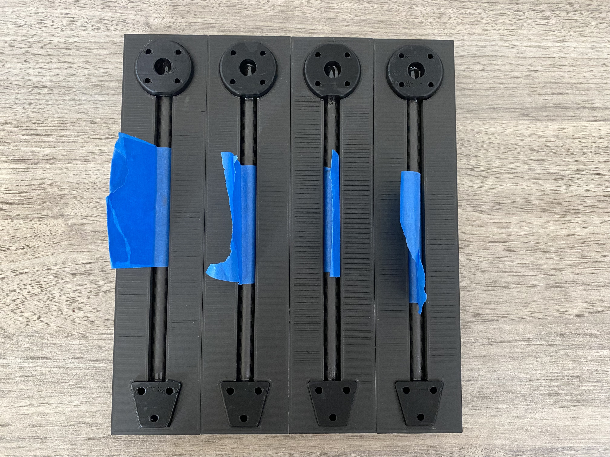

UAV Assembly
Lets build a drone! .. note:
This project is under active development.
Overview of Process & Materials
TODO: Expand on how to make the drone. If one has access to a 3d printer you can 3d print components or out source to com oanies like Xometry or SendCutSend. All files are available
The follow page assumes you have all of the required materials. If you haven’t bought & manufactured all of the base go back to TODO: Link page with BOM and instructions for 3d printing and manufacturing
Materials Needed: List materials need for this page
- Carbon Fiber Base Plate
Water jet or order
- PCB
Solder Components
Veifity
- Arms
Print Motor Mounts
Print Arm Nodes
Print Mold - 1 % scale
Cut Tubes to kegnth
Insert Threaded Inserts
Glue together
- Landing Legs
Print Leg Mounts
Print Leg Joint
Cut tubes to legnth
Drill holes in tubes
Bolt Together
Building the UAV Frame
Base Plate
This is the content of the subsubsection.
Arms
Required Materials
4 - 120mm Carbon Rods TODO: Double check length
4 - Motor Mounts
4 - Arm Mounts
4 - Arm Molds
24 - M3 Heat-set inserts
JB Weld Plastic Bonder
Painters Tape
Gluing Arms Together
Before gluing, clear your work table. Use either a silicon mat or lay paper towels across your work table as you don’t want to get JB weld ever where. You also want a pair of gloves, a cup to mix the JB weld in and a stiring stick.
After that grab your carbon rods, arm mounts, motor mounts and molds. Below is a picture of all those components.

First wrap each of your carbon rods with painters tape in the middle leaving a section that can be used to pull the arm out of the mold once cured. Below shows rods taped:

Next you’ll glue the arms together. Note: the JB weld only has 10 minutes of good working time so if your doing this by yourself only do two arms at a time to give yourself plenty of time. Now open the JB weld, push out about and 2 quarter size blobs into your container. Stir the two parts of the JB thoroughly; after mixing use your stir stick to coat the inside of the motor mount with JB. Then coat the inside & outside of the carbon rod. After both the mount and rod had a thin coating slowing insert the rod while spinning it. Make sure there is always a thin ring of JB weld around the rod. If there isn’t you need more JB. Use a paper towel to remove any excess JB. Repeat the process for the arm mount. Note: the Motor mount takes more glue then the arm mount. After both sides have been glued rotate the pieces so the tape aligns with the top of the motor & arm mount. Slowly insert the glued assembly into the mold. Push firmly to ensure the mounts lay flat within the mold. Repeat the process for the other 3 arms. Below is an image of the finished arm assemblies after glue.
{kind=link}
After waiting 24 hours for a full cure before removing the arms from the molds. The glued arms should look like the following: TODO: Add image
Subsubsubsection 1.1.1